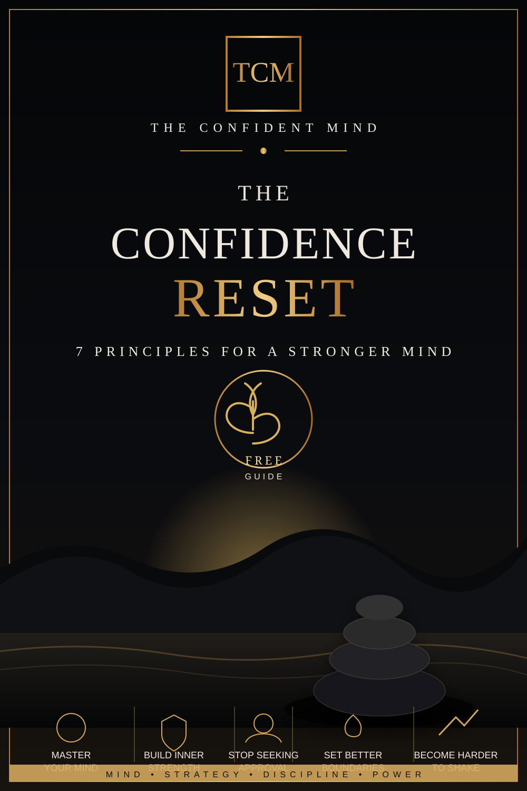

FREE GUIDE
The Confidence Reset
A practical introduction to stronger self-trust, better boundaries, calmer communication, and less dependence on approval.
Seven principles
- Stop treating rejection as a verdict. A decision made by someone else is information about fit, timing, preference, or circumstance.
- Separate self-worth from performance. You can improve a behavior without turning the mistake into an identity.
- Use shorter boundaries. A clear “I can't do that” is often stronger than a five-minute explanation.
- Let discomfort exist. Confidence grows when you discover you can survive awkwardness, disagreement, and uncertainty.
- Make decisions you can respect. Choose based on your values and the facts you have, not on the reaction you hope to get.
- Build evidence with action. Small promises kept to yourself are the raw material of self-trust.
- Keep confidence generous. You do not need to make someone else smaller to stand firmly in your own place.
This guide is intentionally free while The Confident Mind builds its library. Check back for deeper workbooks and digital tools later.